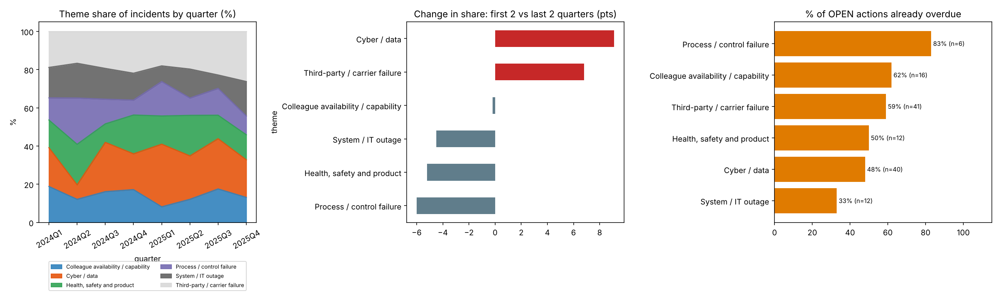

Reliability engineering series
Incident themes with NLP
Incident and audit logs hold hundreds of free-text records. Counting by category hides what is changing. Which themes recur, which are growing, and where are actions going overdue?

Approach
-
Generated 506 synthetic incident/audit records over 8 quarters across 6 themes (third party, IT outage, process/control, colleague availability, health and safety, cyber/data). Two themes were deliberately made to grow so the method can be checked.
-
TF-IDF text features, then NMF topic modelling (unsupervised). Topics are labelled by an analyst from their top terms.
-
Trend analysis (share of incidents, first two vs last two quarters) and an open-action ageing view (share of open actions already past due date).
Results
-
Fastest growing: Cyber/data (+9.1 points of share) and Third-party/carrier failure (+6.8 points). Both were planted, and the method recovered them.
-
Open actions: Third-party (41 open, 59% overdue) and Cyber (40 open, 48% overdue) combine growth with a large backlog. Process/control has the worst overdue rate (83%) but only 6 open actions.
-
Recovered themes matched the hidden labels perfectly (100% purity).
What I would tell leadership
Two themes are both growing and carrying the biggest action backlog: third-party and cyber. Prioritise closure of those actions and check whether the actions address root cause or just the symptom.
Limitations
The 100% match is because synthetic text is much cleaner than real incident text. Real logs need cleaning, more topics, manual review of a sample, and coverage checks. Treat topics as a triage aid, not a classification of record.